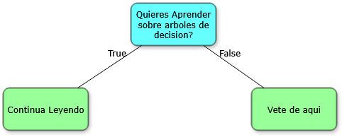
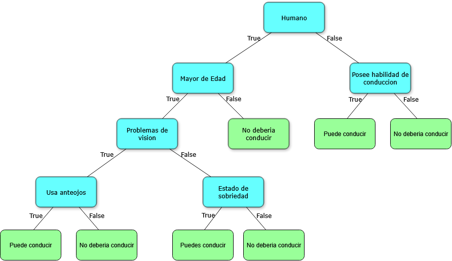
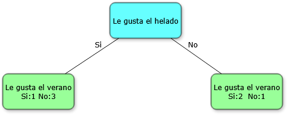
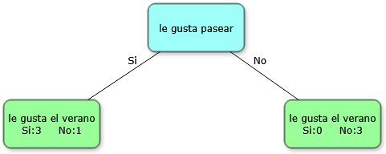
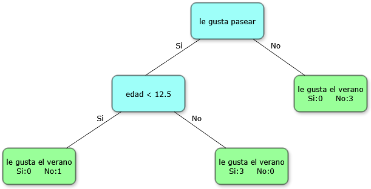
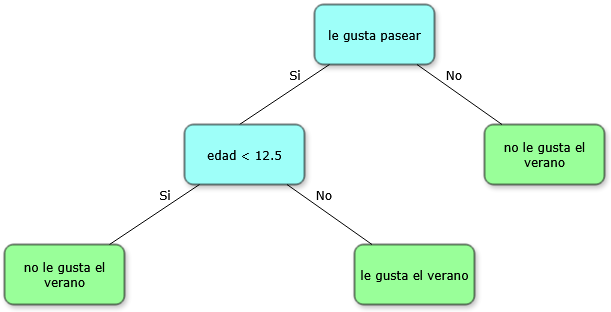
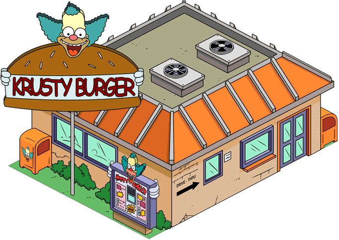

2025 Trabajo Semestral - Machine Learning
Autor: Jose Francisco Saldias
Introducción:
El machine learning es una rama de la inteligencia artificial (IA) centrada en entrenar a computadoras y máquinas para imitar el modo en que aprenden los humanos, realizar tareas de forma autónoma y mejorar su rendimiento y precisión a través de la experiencia y la exposición a más datos.
En este sitio se pretende explicar de forma simple dos conceptos utilizados en el ML, además de evaluar sus ventajas y limitaciones.
Árboles de Decisión
"Un árbol de decisión es un algoritmo de aprendizaje supervisado no paramétrico, que se utiliza tanto para tareas de clasificación como de regresión. Tiene una estructura jerárquica de árbol, que consta de un nodo raíz, ramas, nodos internos y nodos hoja."[1]
Esta definición puede dar la impresión de que los árboles de decisión son un concepto complejo, pero en realidad pueden ser tan simples como el siguiente ejemplo:
Como vemos, la función de un árbol de decisión es plantear una afirmación y luego tomar una decisión basada en si dicha afirmación es verdadera o falsa. Cuando un árbol de decisión clasifica elementos en categorías, se llama árbol de clasificación, y cuando predice valores numéricos, se denomina árbol de regresión. En esta explicación nos centraremos en los árboles de clasificación.
A continuación, se muestra un ejemplo más complejo:
Como se puede observar, dentro del árbol se puede combinar información numérica, como un rango de edad, con información binaria, como la presencia o ausencia de problemas de visión. También es importante notar que las clasificaciones, como "puede conducir", pueden repetirse.
Por convención, las decisiones verdaderas suelen colocarse a la derecha y las falsas a la izquierda. Para recorrer un árbol, se comienza desde la parte superior (nodo raíz) y se avanza hacia abajo siguiendo los nodos, lo que en computación se realiza mediante un algoritmo de búsqueda (por ejemplo, greedy search).
Los diferentes nodos del árbol se clasifican así:
- Nodo raíz: el que se encuentra en la parte superior; solo tiene conexiones salientes.
- Nodos internos (o ramas): tienen tanto conexiones entrantes como salientes.
- Hojas: están al final del árbol y solo tienen conexiones entrantes.
Ahora que conocemos la estructura y la función de un árbol, podemos preguntarnos: ¿cómo se construye uno a partir de datos? Por ejemplo, observemos la siguiente tabla:
| Le gusta el helado | Le gusta pasear | Edad | Le gusta el verano |
|---|---|---|---|
| Sí | Sí | 7 | No |
| Sí | No | 12 | No |
| No | Sí | 18 | Sí |
| No | Sí | 35 | Sí |
| Sí | Sí | 38 | Sí |
| Sí | No | 50 | No |
| No | No | 83 | No |
El primer paso para construir un árbol de decisión es elegir cuál será la afirmación que colocaremos como nodo raíz. Para ello, evaluaremos tres posibles afirmaciones extraídas de los datos: "le gusta el helado", "le gusta pasear" y "edad". Empezaremos probando qué tan bien predice la afirmación "le gusta el helado" respecto a la decisión que queremos predecir: "le gusta el verano".
Como se puede observar, las hojas del árbol contienen una mezcla de respuestas "sí" y "no", lo que significa que esta afirmación no predice perfectamente la variable objetivo. A esta mezcla se le llama impureza. Por lo tanto, una forma lógica de elegir la mejor afirmación para el nodo raíz es comparando qué tan puras son las divisiones que produce cada una.
Existen varias formas de medir esta impureza: Gini impurity, entropía y ganancia de información. En este caso utilizaremos Gini impurity por ser una métrica popular y más sencilla de explicar.
Cálculo de Gini Impurity
La fórmula para calcular la impureza Gini en una hoja es la siguiente:
Gini de una hoja = 1 - (p_sí)² - (p_no)²
Para la hoja izquierda del árbol anterior (1 "sí" y 3 "no"):
Gini = 1 - (1/4)² - (3/4)² = 1 - 0.0625 - 0.5625 = 0.375
Para la hoja derecha (2 "sí" y 1 "no"):
Gini = 1 - (2/3)² - (1/3)² ≈ 1 - 0.444 - 0.111 ≈ 0.444
Como las hojas no tienen el mismo número de datos, calculamos la impureza total como un promedio ponderado:
Gini total = (4/7) * 0.375 + (3/7) * 0.444 ≈ 0.405
Comparación con otras afirmaciones
Podemos repetir este proceso con las otras afirmaciones. En el caso de la edad, debemos dividir los valores numéricos en rangos (por ejemplo, "edad < 15") y calcular la impureza Gini para cada posible división, eligiendo la que produzca el árbol más puro.
Tras calcular las impurezas Gini para las tres afirmaciones, obtenemos:
- Le gusta el helado: 0.405
- Le gusta pasear: 0.214
- Edad < 15: 0.343
Como "le gusta pasear" tiene la menor impureza, la elegimos como raíz del árbol:
Refinando el árbol
Notamos que en la hoja izquierda del árbol aún hay una mezcla (3 "sí" y 1 "no"). Para mejorar la precisión, intentamos subdividir ese grupo utilizando alguna de las afirmaciones descartadas. En este caso, la mejor opción resulta ser la edad:
Ahora todas las hojas contienen decisiones puras (sin mezcla de sí y no), por lo que no es necesario seguir dividiendo. Solo queda asignar una categoría de salida a cada hoja según la mayoría de casos en ella:
¡Con eso terminamos la construcción del árbol de decisión!
A Continuacion puedes probar el árbol de decisión creado
Completa los siguientes campos y observa cómo el árbol toma una decisión.
Reinforcement Learning
El aprendizaje por refuerzo (RL) es un tipo de proceso de machine learning que se centra en la toma de decisiones por parte de agentes autónomos. Un agente autónomo es cualquier sistema que puede tomar decisiones y actuar en respuesta a su entorno independientemente de las instrucciones directas de un usuario humano. Los robots y los coches autónomos son ejemplos de agentes autónomos. En el aprendizaje por refuerzo, un agente autónomo aprende a realizar una tarea por ensayo y error en ausencia de cualquier orientación por parte de un usuario humano. Aborda especialmente los problemas de toma de decisiones secuenciales en entornos inciertos, y se muestra prometedor en el desarrollo de la inteligencia artificial.[2]
Ejemplo Práctico
Para explicar el concepto de Reinforcement Learning podemos usar un ejemplo práctico: imagina que quieres comer una hamburguesa y tienes que decidir entre Krusty Burger y Hamburguesas Bob. Nunca has ido a ninguno de estos locales, ¿cómo decides cuál elegir? ¿Cómo sabemos cuál servirá una mejor hamburguesa?
Son problemas como estos los que resuelve RL. Es una metodología que permite a los computadores aprender y adaptarse basándose en la experiencia, y ha sido usada en muchas situaciones como enseñarle a los computadores a jugar ajedrez y Go o para enseñar a los autos que se conducen solos.
Proceso de Decisión
Volviendo al ejemplo de las hamburguesas, ya que nunca hemos ido a ninguno de los locales, podemos decir que cada uno tiene la misma probabilidad de ser elegido (0.5). Podemos visualizar esto como una línea donde cada opción ocupa un espacio proporcional a su probabilidad:
Para decidir a qué local ir, elegimos un número al azar entre 0 y 1. Si obtenemos 0.7:
Como 0.7 se ubica en la región que representa Bob's Burgers, decidimos ir a ese local. Al comer aquí nos sirven una gran hamburguesa y quedamos muy satisfechos. Sin embargo, solo hemos estado en este local una sola vez, por lo tanto aún no tenemos confianza de que quedemos satisfechos cada vez que visitemos. Es probable que si vamos a Krusty Burger también recibamos el mismo servicio, así que aún nos gustaría ir a probar.
Actualizando Probabilidades
Como quedamos satisfechos con nuestra visita a Bob's Burgers, tiene sentido que incremente la probabilidad de que lo volvamos a elegir. Para determinar cuánto incrementa esta probabilidad, valoramos qué tanto nos gustó la hamburguesa en una escala de 0 a 1 (le pondremos 1) y usamos la siguiente ecuación:
nueva p(Bob) = p(Bob) + [Tasa de aprendizaje * (puntaje - p(Bob)]Donde p(x) = probabilidad de x
Esta ecuación calcula la nueva probabilidad usando la probabilidad actual, el puntaje e introduce un nuevo concepto: la tasa de aprendizaje. Este número controla qué tan pequeño o grande queremos que sea el cambio en las probabilidades cada vez que las actualicemos. La tasa de aprendizaje toma valores entre 0 y 1:
- Si es 0: la probabilidad no cambia
- Si es 1: la probabilidad cambia completamente al nuevo valor
En nuestro caso, usaremos una tasa de aprendizaje de 0.1:
nueva p(Bob) = 0.5 + [0.1 * (1 - 0.5)] = 0.55Ahora nuestra probabilidad de elegir Bob's Burguer aumentó a 0.55, lo que significa que la probabilidad de elegir Krusty Burguer cambió a:
nueva p(Krusty) = 1 - nueva p(Bob) = 0.45El incremento es pequeño porque, aunque quedamos satisfechos, solo hemos ido una vez y es posible que no siempre se repita la misma experiencia.
Segunda Experiencia
Más tarde queremos hamburguesa nuevamente. Elegimos un número al azar (0.2) que cae en la región de Krusty Burger:
Al ordenar en Krusty nos dan una hamburguesa muy pequeña y quedamos insatisfechos (puntaje: 0). Actualizamos las probabilidades:
nueva p(Krusty) = 0.45 + [0.1 * (0 - 0.45)] = 0.41
nueva p(Bob) = 1 - 0.41 = 0.59Convergencia
Si repetimos este proceso muchas veces, eventualmente las probabilidades se estabilizarán (por ejemplo, 0.19 para Krusty y 0.81 para Bob's). Cuando las probabilidades dejan de cambiar significativamente, decimos que el algoritmo ha convergido, lo que significa que hemos aprendido cuál es la mejor opción basándonos en nuestras experiencias.
Definiciones Clave
Ahora que entendemos cómo funciona Reinforcement Learning, podemos definir algunos términos técnicos:
- Entorno: Es el contexto con el que interactúa el agente. En nuestro ejemplo, serían ambos locales de comida.
- Agente: La entidad que toma decisiones. En este caso, fuimos nosotros.
- Política (Policy): Estrategia que usa el agente para tomar decisiones (en nuestro caso, las probabilidades de elección).
- Recompensa: Retroalimentación numérica que recibe el agente después de cada acción. En nuestro ejemplo fue el puntaje (0-1) que dimos a cada hamburguesa.
- Tasa de aprendizaje: Controla cuánto afecta cada nueva experiencia a las probabilidades futuras.
Simulador Interactivo: Bandido Multi-brazo
Estadísticas:
Total de jugadas: 0
Recompensa acumulada: 0
Brazo preferido: Ninguno
¿Cómo funciona? Cada brazo da recompensas diferentes (normalmente entre 0 y 1). El algoritmo debe aprender cuál es el mejor brazo explorando (probando al azar) y explotando (usando lo aprendido). Puedes ajustar los parámetros para ver cómo afectan al aprendizaje.
Comparativa y Conclusiones
Ventajas y desventajas de los árboles de decisión
Ventajas:
- Fáciles de entender e interpretar: Gracias a su estructura jerárquica, es sencillo seguir el razonamiento del modelo y ver qué atributos son más importantes.
- Requieren poca preparación de datos: Funcionan bien con datos numéricos y categóricos, e incluso pueden manejar valores faltantes.
- Versátiles: Se pueden usar tanto para clasificación como para regresión, y no necesitan que los atributos estén relacionados entre sí.
Desventajas:
- Pueden sobreajustarse: Si el árbol es muy grande, puede ajustarse demasiado a los datos de entrenamiento y fallar con datos nuevos.
- Sensibles a pequeños cambios: Una mínima modificación en los datos puede generar un árbol completamente diferente.
- Entrenamiento costoso: Aunque son fáciles de usar, construir el árbol puede ser más lento que otros algoritmos, debido a su enfoque de búsqueda exhaustiva.
Ventajas y desventajas del Reinforcement Learning
Ventajas:
- Aprendizaje autónomo: Los sistemas pueden aprender por sí mismos mediante la interacción con el entorno, sin necesidad de grandes conjuntos de datos etiquetados.
- Excelente para problemas secuenciales: Es ideal para tareas donde las decisiones afectan estados futuros, como en juegos, robótica o sistemas de control.
- Adaptabilidad continua: Pueden mejorar su desempeño con el tiempo mientras interactúan con entornos dinámicos o cambiantes.
- Balance exploración-explotación: La política ε-greedy y otros métodos permiten encontrar un equilibrio entre probar nuevas acciones y aprovechar lo aprendido.
Desventajas:
- Alto costo computacional: Requieren muchas interacciones con el entorno para converger a una buena política, lo que puede ser lento y costoso.
- Dificultad en el diseño de recompensas: Definir un sistema de recompensas adecuado es crucial y puede ser complejo (problema de "reward shaping").
- Inestabilidad durante el entrenamiento: Los algoritmos pueden ser sensibles a la configuración de hiperparámetros como la tasa de aprendizaje o el factor de descuento.
- Problema de exploración: En entornos complejos, puede ser difícil explorar suficientes estados para aprender políticas óptimas.
Comparación final
Mientras los árboles de decisión son ideales para problemas estáticos con datos estructurados donde la interpretabilidad es importante, el Reinforcement Learning brilla en escenarios dinámicos que requieren toma de decisiones secuenciales y adaptación continua. La elección entre uno u otro dependerá de la naturaleza del problema, los recursos disponibles y si el entorno permite la interacción para el aprendizaje.
| Criterio | Árboles de Decisión | Reinforcement Learning |
|---|---|---|
| Mejor para | Datos estructurados, problemas estáticos | Entornos dinámicos, decisiones secuenciales |
| Interpretabilidad | Alta (estructura visible) | Baja (policy como "caja negra") |
| Preparación de datos | Mínima | Requiere diseño de entorno/recompensas |
| Costo computacional | Moderado (entrenamiento) | Alto (muchas interacciones necesarias) |
| Adaptabilidad | Baja (requiere reentrenar) | Alta (aprende continuamente) |